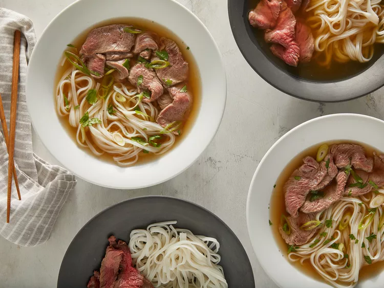

Pho (Vietnamese Noodle Soup)
Description
This traditional pho recipe uses beef bones, fish sauce, star anise, and ginger to create a delicious aromatic Vietnamese broth from scratch. The flavorful broth is ladled over rice noodles and thinly sliced beef and topped with fresh garnishes. As with many foods, the origins of pho are unknown. It is believed to have been created in northern Vietnam in the early 20th century. It gained popularity in many countries after the Vietnam War.
Ingredients:
- Beef Soup Bones: Use the shank and knee to make the homemade bone broth.
- Rice Noodles: You should be able to find dry rice noodles at most grocery stores, either in the international aisle or another pantry aisle.
- Beef: This recipe calls for beef top sirloin. Make sure it's thinly sliced so the hot broth can cook it.
- Fish Sauce: Fish sauce will give the pho a hint of salty, fishy flavor.
- Onion: Roast the onions for an extra depth of flavor.
- Spices and Seasonings: This recipe calls for ginger, star anise, and salt.
- Garnishes: Garnish your pho with cilantro, green onion, Thai basil, lime, hoisin sauce, sriracha, or anything else you like.
Directions:
- Gather all ingredients.

- Preheat the oven to 425 degrees F (220 degrees C).
- Place beef bones on a baking sheet and roast in the preheated oven until browned, about 1 hour.

- Place onion halves on a second baking sheet and roast on another rack until blackened and soft, about 45 minutes.

- Transfer beef bones and onion halves to a large stockpot. Add ginger, salt, star anise, fish sauce, and 4 quarts water; bring to a boil. Reduce heat to low and simmer for 6 to 10 hours. Strain the broth into a saucepan and set aside.

- Place rice noodles in a large bowl filled with room temperature water. Let soak for 1 hour. Drain.
- When noodles have soaked for 1 hour, heat up the reserved broth by bringing it to a simmer.
- Bring a large pot of water to a boil. Cook the noodles in the boiling water for 1 minute. Drain.
- Divide noodles among 4 serving bowls; top with sirloin, cilantro, and green onion. Ladle hot broth over the top. Stir and let sit until beef is partially cooked and no longer pink, 1 to 2 minutes.

- Serve with bean sprouts, Thai basil, lime wedges, hoisin sauce, and chile-garlic sauce on the side.